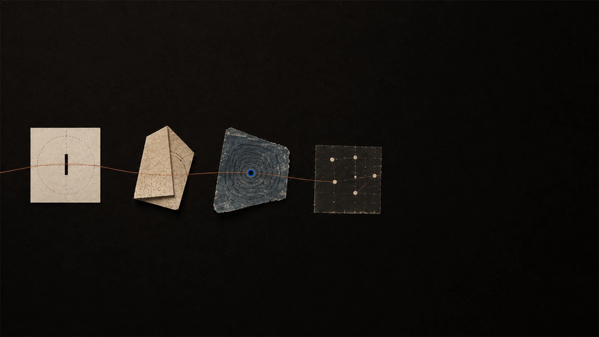

01 / Name it
Start with one unfinished thought.
Describe the exact point that feels confusing, surprising, or fragile. Specific uncertainty gives the conversation something to hold.
Learning guide
Socrates works best when the goal is not speed, but a more reliable way to return to an idea.

A useful beginning
A good first prompt is not a polished request. It is the honest edge: “I can follow the steps until this part,” or “I do not see why this must be true.”
Try it with Socrates01 / Name it
Describe the exact point that feels confusing, surprising, or fragile. Specific uncertainty gives the conversation something to hold.
02 / Work it
Let the tutor test the idea with examples, counterexamples, and smaller steps. The goal is not to hide the effort—it is to direct it.
03 / Explain it
After a useful explanation, try a short summary. Where your version becomes vague is usually where the next question belongs.
04 / Revisit it
Use recall to make an idea available later, then connect it with the rest of your map when a new question arrives.